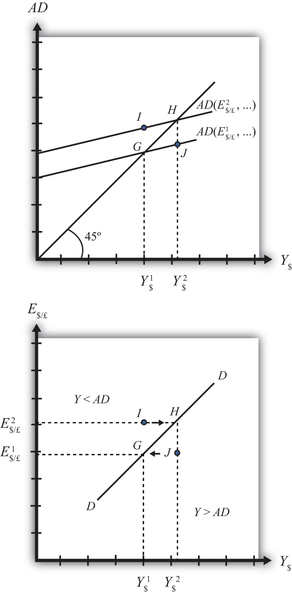

The DD curve is derived by transferring information described in the goods and services (G&S) market model onto a new diagram to show the relationship between the exchange rate and equilibrium gross national product (GNP). The original G&S market, depicted in the top part of Figure 20.1 "Derivation of the DD Curve", plots the aggregate demand (AD) function with respect to changes in U.S. GNP (Y$). Aggregate demand is measured along the vertical axis and aggregate supply (or the GNP) is measured on the horizontal axis. As discussed in Chapter 19 "National Output Determination", Section 19.7 "The Aggregate Demand Function", the AD function is dependent upon several different exogenous variables, most notably the exchange rate between domestic and foreign currency (E$/£). However, AD is also affected by investment demand (I), government demand (G), government tax revenues (T), government transfer payments (TR), and the price level in the domestic (P$) and foreign (P£) countries. The endogenous variable in the model is U.S. GNP (Y$). (See Table 20.1 "G&S Market" for a quick reference.) In this exercise, since our focus is on the exchange rate, we label the AD function in Figure 20.1 "Derivation of the DD Curve" as AD(E$/£, …), where the ellipsis (…) is meant to indicate there are other unspecified variables that also influence AD.
Table 20.1 G&S Market
| Exogenous Variables | E$/£, I, G, T, TR, P$, P£ |
| Endogenous Variable | Y$ |
Figure 20.1 Derivation of the DD Curve
Initially, let’s assume the exchange rate is at a value in the market given by E$/*1. We need to remember that all the other variables that affect AD are also at some initial level. Written explicitly, we could write AD as AD(E$/£1, I1, G1, T1, TR1, P$1, P£1). The AD function with exchange rate E$/£1 intersects the forty-five-degree line at point G which determines the equilibrium level of GNP given by Y$1. These two values are transferred to the lower diagram at point G determining one point on the DD curve (Y$1, E$/£1).
Next, suppose E$/£ rises from E$/£1 to E$/£2, ceteris paribus. This corresponds to a depreciation of the U.S. dollar with respect to the British pound. The ceteris paribus assumption means that investment, government, taxes, and so on stay fixed at levels I1, G1, T1, and so on. Since a dollar depreciation makes foreign G&S relatively more expensive and domestic goods relatively cheaper, AD shifts up to AD(E$/£2, …). The equilibrium shifts to point H at a GNP level Y$2. These two values are transferred to the lower diagram at point H, determining a second point on the DD curve (Y$2, E$/£2).
The line drawn through points G and H on the lower diagram is called the DD curve. The DD curve plots an equilibrium GNP level for every possible exchange rate that may prevail, ceteris paribus. Stated differently, the DD curve is the combination of exchange rates and GNP levels that maintain equilibrium in the G&S market, ceteris paribus. We can think of it as the set of aggregate demand equilibriums.
An equilibrium in an economic model typically corresponds to a point toward which the endogenous variable values will converge based on some behavioral assumption about the participants in the model. In this case, equilibrium is not represented by a single point. Instead every point along the DD curve is an equilibrium value.
If the economy were at a point above the DD curve, say, at I in the lower diagram, the exchange rate would be E$/£2 and the GNP level at Y$1. This corresponds to point I in the upper diagram where AD > Y, read off the vertical axis. In the G&S model, whenever aggregate demand exceeds aggregate supply, producers respond by increasing supply, causing GNP to rise. This continues until AD = Y at point H. For all points to the left of the DD curve, AD > Y, therefore the behavior of producers would cause a shift to the right from any point like I to a point like H on the DD curve.
Similarly, at a point such as J, to the right of the DD curve, the exchange rate is E$/£1 and the GNP level is at Y$2. This corresponds to point J in the upper diagram above where aggregate demand is less than supply (AD < Y). In the G&S model, whenever supply exceeds demand, producers respond by reducing supply, thus GNP falls. This continues until AD = Y at point G. For all points to the right of the DD curve, AD < Y, therefore the behavior of producers would cause a shift to the left from any point like J to a point like G on the DD curve.
A useful analogy is to think of the DD curve as a river flowing through a valley. (See the 3-D diagram in Figure 20.2 "A 3-D DD Curve".) The hills rise up to the right and left along the upward-sloping DD curve. Just as gravity will move a drop of water downhill onto the river valley, firm behavior will move GNP much in the same way: right or left to the lowest point along the DD curve.
Figure 20.2 A 3-D DD Curve

Jeopardy Questions. As in the popular television game show, you are given an answer to a question and you must respond with the question. For example, if the answer is “a tax on imports,” then the correct question is “What is a tariff?”